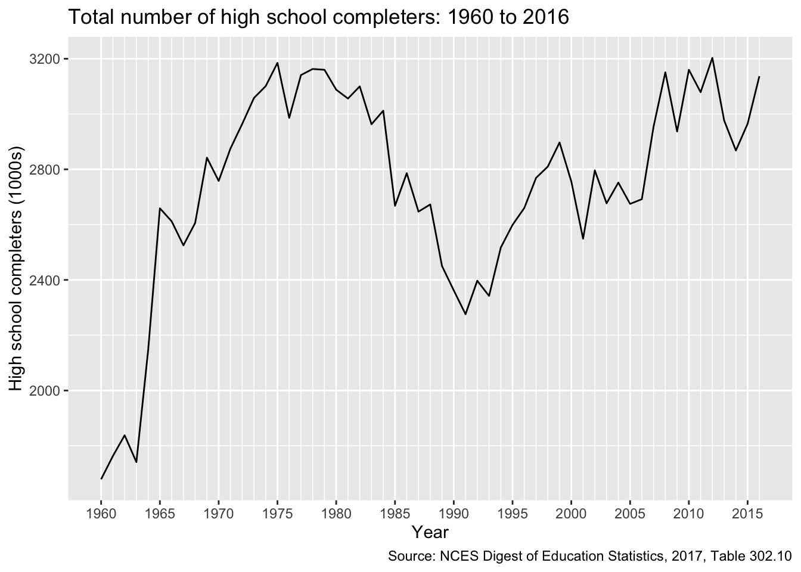
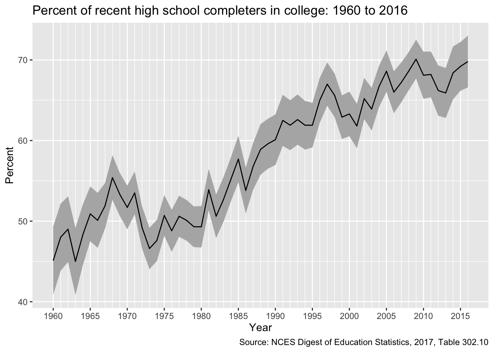
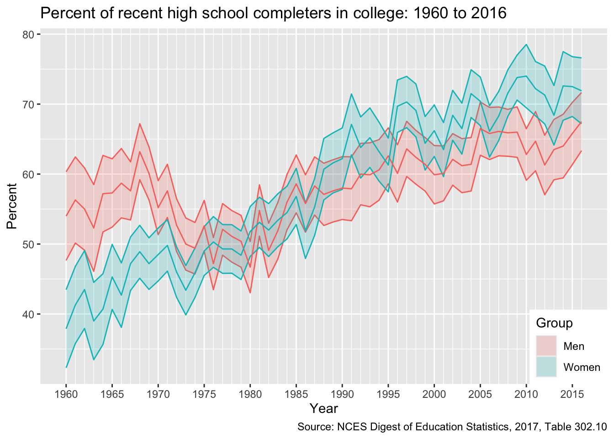

This lesson introduces the basic steps to scrape data from a website using the rvest. Because there are about as many ways to scrape a website as there are types of web data that you want to gather, web scraping is both art and science, with varying degrees of data cleaning required. If you are lucky, data will be regularly and unambiguously formatted, meaning that it is easy to grab the data you want in the format that you want. If you are less lucky, regular expressions to clean strings will quickly become your friend.
Knowing a bit about web design, specifically HTML, XML, and CSS is helpful when web scraping. This lesson focuses on static sites, but sites that require user interaction (e.g., clicking a button or inputting data into a form in order to show data) can also be scraped. These sites require special packages such as RSelenium and some knowledge of Javascript is helpful.
For this lesson, however, we’ll read static web tables from NCES Digest of Education Statistics. NCES helpfully makes these tables available in downloadable Excel worksheets, but we’ll pretend they don’t exist for the moment. Specifically, we’ll focus on Table 302.10, which shows numbers of high school graduates and percentage of college enrollment, broken out by gender and college level, for the years 1960 through 2016.
── Attaching core tidyverse packages ──────────────────────── tidyverse 2.0.0 ──
✔ dplyr 1.1.4 ✔ readr 2.1.5
✔ forcats 1.0.0 ✔ stringr 1.5.1
✔ ggplot2 3.5.1 ✔ tibble 3.2.1
✔ lubridate 1.9.4 ✔ tidyr 1.3.1
✔ purrr 1.0.4
── Conflicts ────────────────────────────────────────── tidyverse_conflicts() ──
✖ dplyr::filter() masks stats::filter()
✖ dplyr::lag() masks stats::lag()
ℹ Use the conflicted package (<http://conflicted.r-lib.org/>) to force all conflicts to become errors
library(rvest)
Attaching package: 'rvest'
The following object is masked from 'package:readr':
guess_encoding
library(lubridate)
Inspect the web site
First, let’s check out the table we want to scrape. The table we see looks like a regularly formatted table, much like we would see in a paper document. But unlike a printed document, a web page relies on hidden-from-the-user code to generate what we see. By doing it this way instead of serving a static image, websites can adjust to the wide array of user screen sizes, devices, and operating systems. Instructions that tell the user device how to generate the page are also smaller than sending a preformatted image, so bandwidth and time to load are also reduced.
But as web scrapers, we don’t need this. We need the underlying HTML/CSS/XML code used to generate the page. To see it, you’ll need to use a web site inspector. With Firefox and Chrome, you should be able to right-click the page and see the underlying code (you may need to turn on developer tools first). With Safari, you will have to enable the developer tools first.
The top code of the page should look something like this:
<!DOCTYPE html PUBLIC "-//W3C//DTD XHTML 1.0 Transitional//EN" "http://www.w3.org/TR/xhtml1/DTD/xhtml1-transitional.dtd"><!-- Current year pub navigation function -->
Moving further down, we find the table data, but in a very different format (first row):
Right now, we have a structured, but not particularly useful object holding our web page data. To pull out specific data, we use the html_nodes() function. Selecting a node is somewhat akin to using dplyr’s filter() on a data frame.
Great…but what’s a node and how do I know which ones to use? First, a node is a particular element that is comprised of some information stored between, for example, HTML tags like <p>...</p> or <h1>...</h2>. Good web design says that information on page should be organized by its purpose and similarity to other data. For example, major headers should be wrapped in <h1> tags and similar page sections should be given the same CSS class. We can use CSS ids and classes with the html_nodes() function to pull the exact data we need.
Great!…but what are the classes that we need? Well, we could just inspect the web page manually and guess. For some pages, that works great. But it certainly looks like a chore for this page. Luckily, there’s a great tool that will help us.
SelectorGadget
SelectorGadget is a (now very old) plugin that allows you to click on a web page and, through process of elimination, get the exact combination of HTML tags and CSS ids and classes you need to pull only the data you need.
The SelectorGadget page has instructions, but briefly, this is the process:
On the first click, SelectorGadget will make its best guess about what you want based on the item you clicked (e.g., table column). The particular element you clicked will be green. The other elements it assumed you want will turn yellow. Sometimes it’s right and you’re finished!
Often, it will select something you don’t want. In that case, click on the yellow item you don’t want. Again, SelectorGadget will make and informed guess. Sometimes it will drop all extraneous elements and sometimes you will need to click multiple times. These elements will be red.
On the other hand, SelectorGadget may not have given you everything you want. Keep clicking on new elements (and dropping the extra) until only what you want is highlighted in either green or yellow.
As you’re clicking, you’ll see a box with a string of element ids and classes changing. When you’re finished, copy this string. This is your node you’ll use in the html_nodes() function!
Quick exercise
Get the SelectorGadget plugin and play with it for a few minutes. See if you can select only a specific column then only a specific row.
First column of data
As a first step, let’s get the first column of data in Table 302.10: the total number of recent high school graduates. Using SelectorGadget, I see that the node string I should use is '.tableBracketRow td:nth-child(2)'. After selecting the node, we use html_text() to convert the data into a vector like we’re used to seeing.
## subset to just first columntot <- site %>%html_nodes(".tableBracketRow td:nth-child(2)") %>%html_text()## showtot
So far so good, but we can see a few problems. First, the blank rows in the table show up in our data. While those blank table spaces are good for the eyes, they aren’t good in our data set. Let’s try to remove them using the trim = TRUE option.
## ...this time trim blank spacestot <- site %>%html_nodes(".tableBracketRow td:nth-child(2)") %>%html_text(trim =TRUE)## showtot
Getting closer. Next, let’s convert our numbers to actual numbers, which R thinks are strings at the moment. To do this, we need to get rid of the commas. The str_replace() function is perfect for this. Regular expressions can become complicated, but our use here is simple:
## remove commas, replacing with empty stringtot <- tot %>%str_replace(pattern =",", replacement ="")## showtot
So that these numbers make sense, let’s grab the years column and create and data frame so that we can make a figure of long term high school completer totals. Again, the first step is to use SelectorGadget to get the node string. This time, it’s "tbody th".
## get years columnyears <- site %>%html_nodes("tbody th") %>%html_text(trim =TRUE)## remove blank spaces like beforeyears <- years %>%str_subset(pattern =".+")## showyears
We’ve gotten rid of the blank items, but now we have a new problem: the footnotes in the last few years has just be added to the year. Instead of 2010, we have 20103, and so on through 2016. Since the problem is small (it’s easy to see all the bad items) and regular (always extra 3 as the 5th digit), we can fix it using str_sub().
## trim footnote that's become extra digityears <- years %>%str_sub(start =1, end =4)## showyears
Fixed! Now we bind together with our high school completers total. Because we want to make a time period line graph, we’ll also convert the years to a date format. We’ll use ymd from the lubridate library. Since we only have years, we’ll include the argument truncated = 2L, which means that we have an incomplete date (no month or day).
NB Since we dropped blank elements in each vector separately, it’s important to check that all the data line up properly now that we’ve bound them together. If we wanted to be safer, we could have bound the data first, then dropped the rows with double missing values.
## put in data framedf <-bind_cols(years = years, total = tot) %>%mutate(years =ymd(years, truncated =2L))## showdf
You can see that the date format adds a month and day (January 1st by default). While these particular dates probably aren’t right, we won’t use them later when graphing so they can stay.
Let’s plot our trends.
## plotg <-ggplot(df, mapping =aes(x = years, y = total)) +## line for the main estimategeom_line() +## make x-axis look nice## major breaks: every 5 years, from min year to max year## minor breaks: every 1 year, from min year to max year## labels: formate to only show year ("%Y")scale_x_date(breaks =seq(min(df$years),max(df$years),"5 years"),minor_breaks =seq(min(df$years),max(df$years),"1 years"),date_labels ="%Y") +## nice labels and titleslabs(x ="Year",y ="High school completers (1000s)",title ="Total number of high school completers: 1960 to 2016",caption ="Source: NCES Digest of Education Statistics, 2017, Table 302.10")g

Quick exercise
Pull in total percentage of enrollment (column 5), add to data frame, and plot against year.
Scrape entire table
Now that we’ve pulled two columns, let’s try to grab the entire table. Once again, we’ll use SelectorGadget to get our node string.
## save nodenode <-paste0(".TblCls002 , td.TblCls005 , tbody .TblCls008 , ",".TblCls009 , .TblCls011 , .TblCls010")## save more dataframe-friendly column names that we## get from looking at the table onlinenms <-c("year","hs_comp_tot", "hs_comp_tot_se","hs_comp_m", "hs_comp_m_se","hs_comp_f", "hs_comp_f_se","enr_pct", "enr_pct_se","enr_pct_2", "enr_pct_2_se","enr_pct_4", "enr_pct_4_se","enr_pct_m", "enr_pct_m_se","enr_pct_2_m", "enr_pct_2_m_se","enr_pct_4_m", "enr_pct_4_m_se","enr_pct_f", "enr_pct_f_se","enr_pct_2_f", "enr_pct_2_f_se","enr_pct_4_f", "enr_pct_4_f_se")## whole tabletab <- site %>%## use nodeshtml_nodes(node) %>%## to text with trimhtml_text(trim =TRUE)## show first few elementstab[1:30]
What happens if you don’t use byrow = TRUE in the matrix command?
It’s getting better, but now we have a lot of special characters that we need to clean out. This section relies more heavily on regular expressions, but the idea is the same as above.
## clean up tabletab <- tab %>%## convert to tibble, leaving name repair as minimal for nowas_tibble(.name_repair ="minimal") %>%## rename using names aboveset_names(nms) %>%## remove commasmutate(across(everything(), ~str_replace(., ",", ""))) %>%## remove dagger and parenthesesmutate(across(everything(), ~str_replace_na(., "\\(\U2020\\)"))) %>%## remove hyphensmutate(across(everything(), ~str_replace_na(., "\U2014"))) %>%## remove parentheses, but keep any content that was insidemutate(across(everything(), ~str_replace(., "\\((.*)\\)", "\\1"))) %>%## remove blank strings (^ = start, $ = end, so ^$ = start to end w/ nothing)mutate(across(everything(), ~str_replace_na(., "^$"))) %>%## fix years like abovemutate(year =str_sub(year, 1, 4)) %>%## convert to numbers, suppressing warnings about NAs b/c we knowmutate(across(everything(), ~suppressWarnings(as.numeric(.)))) %>%## drop rows with missing year (blank online)drop_na(year)## showtab
We could stop where we are, but to make the data more usable in the future, let’s convert to a long data frame. This takes a couple of steps, but the idea is to have each row represent a year by estimate, with a column for the estimate value and a column for the standard error on that estimate. It may help to run the code below one line at a time, checking the progress at each step.
## gather for long datadf <- tab %>%## pivot_longer estimates, leaving standard errors wide for the momentpivot_longer(cols =-c(year, ends_with("se")),names_to ="group",values_to ="estimate") %>%## pivot_longer standard errorspivot_longer(cols =-c(year, group, estimate),names_to ="group_se",values_to ="se") %>%## drop "_se" from standard error estimatesmutate(group_se =str_replace(group_se, "_se", "")) %>%## filter where group == group_sefilter(group == group_se) %>%## drop extra columnselect(-group_se) %>%## arrangearrange(year) %>%## drop if missing year after reshapingdrop_na(year)## showdf
# A tibble: 684 × 4
year group estimate se
<dbl> <chr> <dbl> <dbl>
1 1960 hs_comp_tot 1679 44.5
2 1960 hs_comp_m 756 32.3
3 1960 hs_comp_f 923 30.1
4 1960 enr_pct 45.1 2.16
5 1960 enr_pct_2 NA NA
6 1960 enr_pct_4 NA NA
7 1960 enr_pct_m 54 3.23
8 1960 enr_pct_2_m NA NA
9 1960 enr_pct_4_m NA NA
10 1960 enr_pct_f 37.9 2.85
# ℹ 674 more rows
Plot trends
Let’s look at overall college enrollment percentages for recent graduates over time. Because our data are nicely formatted, it’s easy to subset the full table to data to only those estimates we need as well as generate 95% confidence intervals.
## adjust data for specific plotplot_df <- df %>%filter(group %in%c("enr_pct", "enr_pct_m", "enr_pct_f")) %>%mutate(hi = estimate + se *qnorm(.975),lo = estimate - se *qnorm(.975),year =ymd(as.character(year), truncated =2L),group =ifelse(group =="enr_pct_f", "Women",ifelse(group =="enr_pct_m", "Men", "All")))## showplot_df
# A tibble: 171 × 6
year group estimate se hi lo
<date> <chr> <dbl> <dbl> <dbl> <dbl>
1 1960-01-01 All 45.1 2.16 49.3 40.9
2 1960-01-01 Men 54 3.23 60.3 47.7
3 1960-01-01 Women 37.9 2.85 43.5 32.3
4 1961-01-01 All 48 2.12 52.2 43.8
5 1961-01-01 Men 56.3 3.14 62.5 50.1
6 1961-01-01 Women 41.3 2.81 46.8 35.8
7 1962-01-01 All 49 2.08 53.1 44.9
8 1962-01-01 Men 55 3 60.9 49.1
9 1962-01-01 Women 43.5 2.84 49.1 37.9
10 1963-01-01 All 45 2.12 49.2 40.8
# ℹ 161 more rows
First, let’s plot the overall average. Notice that we use the filter() function in the ggplot() function to remove the subgroup estimates for men and women.
## plot overall averageg <-ggplot(plot_df %>%filter(group =="All"),mapping =aes(x = year, y = estimate)) +## create shaded ribbon for 95% CIgeom_ribbon(aes(ymin = lo, ymax = hi), fill ="grey70") +## line for main estimategeom_line() +## make x-axis look nice## major breaks: every 5 years, from min year to max year## minor breaks: every 1 year, from min year to max year## labels: formate to only show year ("%Y")scale_x_date(breaks =seq(min(plot_df$year),max(plot_df$year),"5 years"),minor_breaks =seq(min(plot_df$year),max(plot_df$year),"1 years"),date_labels ="%Y") +## good labels and titleslabs(x ="Year",y ="Percent",title ="Percent of recent high school completers in college: 1960 to 2016",caption ="Source: NCES Digest of Education Statistics, 2017, Table 302.10") ## showg

After a small dip in the early 1970s enrollment trends have steadily risen over time.
Now let’s compare enrollments over time between men and women (dropping the overall average so our plot is clearer).
## plot comparison between men and womeng <-ggplot(plot_df %>%filter(group %in%c("Men","Women")),## add colour == group to separate between men and womenmapping =aes(x = year, y = estimate, colour = group)) +## ribbon for 95% CI, but lower alpha so more transparentgeom_ribbon(aes(ymin = lo, ymax = hi, fill = group), alpha =0.2) +## primary estimate linegeom_line() +## neat x-axis breaks as beforescale_x_date(breaks =seq(min(plot_df$year),max(plot_df$year),"5 years"),minor_breaks =seq(min(plot_df$year),max(plot_df$year),"1 years"),date_labels ="%Y") +## good labels and titleslabs(x ="Year",y ="Percent",title ="Percent of recent high school completers in college: 1960 to 2016",caption ="Source: NCES Digest of Education Statistics, 2017, Table 302.10") +## set legend title, drop legend for colour since it's redundant with fillguides(fill =guide_legend(title ="Group"),colour ="none") +## position legend so that it sits on plot face, in lower right-hand cornertheme(legend.position =c(1,0), legend.justification =c(1,0))
Warning: A numeric `legend.position` argument in `theme()` was deprecated in ggplot2
3.5.0.
ℹ Please use the `legend.position.inside` argument of `theme()` instead.
## showg

Though a greater proportion of men enrolled in college in the 1960s and early 1970s, women have been increasing their enrollment percentages faster than men since the 1980s and now have comparatively higher rates of college participation.
Find the unemployment rate for 25 to 34 year-olds by degree type for the years 2014 through 2016. Make a long data frame and use it to make a figure of trends over time by educational attainment.
See Table 501.10 of the NCES Digest of Education Statistics, which can can be found here).